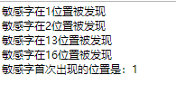
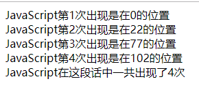

JS内置对象【字符串】
// charAt() 返回字符
// charCodeAt() 返回字符的unicode编码
var str="hello world";
console.log(str.charCodeAt(4));
// indexOf() 返回出现的位置
// 没找到则返回-1
var email="marry.mail@sohu.com";
console.log(email.indexOf("o"));
console.log(email.lastIndexOf("."));
var str="hello world";案例：对用户输入内容的输入框进行排查，看有没有敏感字“草”字
<!DOCTYPE html>
<html>
<head lang="en">
<meta charset="UTF-8">
<title>搜索内容是否有敏感字"草"</title>
</head>
<body>
<script>
//补充代码
var str=prompt('请输入要搜索的内容！');
var start=0;
var first='';
var key=0;
first=str.indexOf('草');
while(str.indexOf('草',start)!=-1){
key=str.indexOf('草',start);
document.write('敏感字在'+key+'位置被发现<br>');
start=key+1;
}
document.write('敏感字首次出现的位置是：'+first);
</script>
</body>
</html>
// slice(start,end)截取字符串
var str="hello world";
console.log(str.slice(7,10));
console.log(str.slice(1));
//负数=总长度+该负数
console.log(str.slice(-3));
console.log(str.slice(-7,-2));
// substring(start,end)与slice(start,end)类似，参数为负数自动转为0
// 将小的数作为开始，大的数作为结束
console.log(str.substring(-7,5)); //(0,5)
console.log(str.substring(2,-5)); //(0,2)
str.substring(6,9)
// substr(start,len)
// len为负数则返回空字符串
console.log(str.substr(6,3));
console.log(str.substr(-5,4)); // (6,4)
console.log(str.substr(3,-4));判断出“JavaScript”这个字符出现的位置，以及它在这段话中总共出现了几次
<!doctype html>
<html lang="en">
<head>
<meta charset="UTF-8">
<title>Document</title>
</head>
<body>
<script>
var str='JavaScript 是属于网络的脚本语言！JavaScript 被数百万计的网页用来改进设计、验证表单、检测浏览器、创建cookies，以及更多的应用。JavaScript 是因特网上最流行的脚本语言。JavaScript很容易使用！你一定会喜欢它的！';
var count=0;
var key=0;
while(str.indexOf('J',key)!=-1){
key=str.indexOf('J',key);
var target=str.substr(key,10);
count++;
if(target=='JavaScript'){
document.write('JavaScript第'+count+'次出现是在'+key+'的位置<br>');
}
key++;
}
document.write('JavaScript在这段话中一共出现了'+count+'次');
</script>
</body>
</html>
// 获取扩展名
var url="http://baidu.com/index.txt";
function getFileFormat(url){
// 获取.在url中出现的位置
var pos=url.lastIndexOf(".");
//return url.substr(pos);
return url.substr(pos+1);
}
var formatName=getFileFormat(url);
var picFormat=getFileFormat("1231434.jpg")
console.log(formatName);
console.log(picFormat); // split()分割字符串 replace()替换字符串
var str='welcome-to-beijing';
//使用split将str转换为数组
//如果中间是用空字符串（''）拆分，那么字符串中的每个字符之间都会被分割
var arr=str.split("-");
var date='2019/12/31';
//["welcome","to","beijing"]
var dateArr=date.split("/");
console.log(dateArr);
console.log(arr);
//replace()替换
var tel='010-62971268,400-100-9098,010-86789889';
//newTel被替换之后的字符串
var newTel=tel.replace(','," ");
console.log(newTel);将连字符转驼峰法表示
<!doctype html>
<html lang="en">
<head>
<meta charset="UTF-8">
<title>Document</title>
</head>
<body>
<script>
function camelback(str){
//通过-分隔符将str拆分成数组
var arr=str.split("-"),newStr=arr[0];
for(var i=1,len=arr.length;i<len;i++){
var word=arr[i];
//将每一个单词的首字母转换为大写
newStr+=word.charAt(0).toUpperCase()+word.substr(1);
// console.log(newStr)
}
return newStr;
}
var camelFormat=camelback("border-left-color");
console.log(camelFormat)
</script>
</body>
</html>JS内置对象【Math】
生成一个n到m之间的随机整数
var random=Math.random();
console.log(random);
// 生成一个n到m之间的随机整数
function getRandom(n,m){
var choise=m-n+1; // 随机整数的个数
return Math.floor(Math.random()*choise+n);
}
var random1=getRandom(2,6);
var random2=getRandom(10,88);JS内置对象【date】
// 创建一个日期时间对象
var weeks=["日","一","二","三","四","五","六"],
today=new Date(),
year=today.getFullYear(),
month=today.getMonth()+1,
date=today.getDate(),
week=today.getDay(),
hours=today.getHours(),
minutes=today.getMinutes(),
seconds=today.getSeconds(),
times=today.getTime(),
time=year+'年'+month+'月'+date+'日'+hours+'时'+minutes+'分'+seconds+'秒 星期'+weeks[week];
console.log("现在是："+time);
console.log(times); // 创建一个日期时间对象
//setMonth（）是用来设置月份，月份的数值是介于0~11之间，如果数字大于11，那么方法会自动往后顺延一年
var today=new Date();
today.setFullYear(2017);
today.setMonth(15);
console.log(today.getFullYear());
// 50天之后是星期
// 第一种做法
today.setDate(today.getDate()+50);
console.log(today.getDay());
// 第二种做法
var weeks=["日","一","二","三","四","五","六"];
var year=today.getFullYear();
var month=today.getMonth();
var day=today.getDate();
// 创建了一个目标日期对象,年,月,日,时,分,秒
var temp=new Date(year+1,month,day);
console.log("50天后的今天是："+temp.getFullYear()+'-'+(temp.getMonth()+1)+'-'+temp.getDate()+'-'+'星期'+weeks[temp.getDay()]);